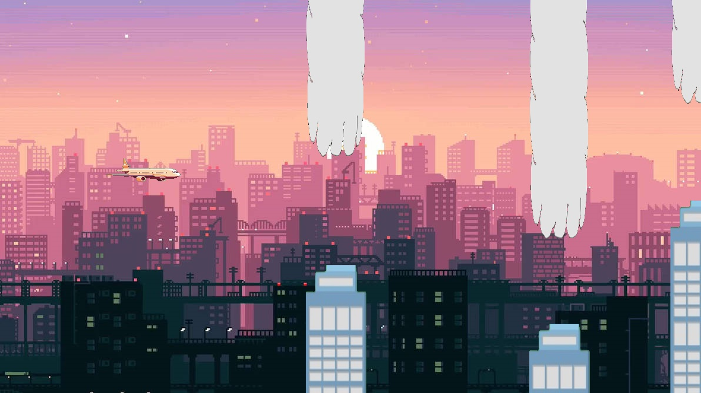

案例研究 · C++ 與物件導向設計 · 大學專題
選單也只是另一個關卡
作業要求做一款有七個關卡的遊戲，而且每一關都要不一樣。底下那套教學用的遊戲框架在設計上只允許三種狀態，而且永遠只有三種。要把這兩個數字兜起來，其實就是整個專題的重點；我們最後的答案是一個基底類別，讓每個關卡與各個選單畫面全都變成同一種物件。
我的角色：團隊自行撰寫的遊戲程式碼大部分由我完成，包括關卡基底類別、玩家物件、整套選單系統，以及第一、五、六關。我的隊友負責第二、三、四、七關以及障礙物間距的演算法。這是大學專題，所以不同於我其他的案例研究，這篇可以直接把程式碼攤開來看。
- 7 個關卡共用同一組介面
- 2,237 行我們自己寫的 C++
- 其中 76% 由我完成
- 17 個已合併的 pull request
- 3 個月，2024 年 3 月到 6 月
- 主迴圈裡只有 1 個指標
這些數字怎麼來的：這是兩個人的專題，所以我沒有靠印象，而是用
git blame 回頭驗證自己的說法。統計範圍是 Source/Game，也就是放我們自己寫的程式碼的目錄，並且把框架原本就附的樣板檔案從我的份額中排除。
Source/Library 與 Source/Core 底下全部都是教學框架，不是我們的成果。原始碼是公開的。
問題
課程提供的是一套為教學而寫的 Windows 遊戲框架。它給你一張固定大小、只放三種遊戲狀態的表：開場畫面、遊玩畫面、結束畫面；還有一個抽象類別 CGameState，上面掛著十一個虛擬函式：OnMove、OnShow、
OnKeyDown，以及其餘的輸入處理函式。框架自己的迴圈會對當下的狀態呼叫這些函式。你沒辦法加上第四種狀態，那張表就宣告成
CGameState *gameStateTable[3]，框架的註解也明講了。
七個關卡塞不進三種狀態。最直覺的作法，也是我一開始的作法，是把關卡全部放進遊玩狀態裡，再依關卡編號分支。這在兩關的時候還行得通。到了第四關，你會發現同一組
switch 得在十一個事件處理函式裡各寫一次，每新增一關就要把它們全部改過，而遊玩狀態也已經變成一個知道遊戲裡每一條規則的檔案。
更麻煩的是，我們當時並不知道後面的關卡會需要什麼。第五關的障礙物會定時消失，第六關的障礙物會上下移動，第七關的重力會反轉，這些都不是一開始就設計好的。所以不管我們做出什麼，它都必須能吸收當時還沒想到的玩法，而且不能讓遊玩狀態每次都多長出一個分支。
設計
其實框架本身早就在做我們需要的事，只是高了一層。它握著一個指向當下狀態的指標，把事件轉發過去，而且從來不問那是哪一種狀態。所以我們把同一個想法往下複製一層：寫一個基底類別 levelInit，宣告和框架的 CGameState
一模一樣的那組函式。我當初留在那些宣告上方的註解到現在還在，而那三個英文字就是整個設計：imitates mygame_run functions（模仿 mygame_run 的函式）。
等到每個關卡都實作了那組介面，遊玩狀態就不再是一個分派器，而只是一個容器。它持有一個裝著基底類別指標的向量，以及一個指向當下元素的指標。
// mygame.h：遊戲裡的每一個畫面，全部用同一種型別持有
std::vector<levels::levelInit*> allLevels = {
&theMainMenu, &theLevel1, &theLevel2, &theLevel3,
&theLevel4, &theLevel5, &theLevel6, &theLevel7
};
levels::levelInit* current = allLevels[currentLevel];
// mygame_run.cpp：框架送來的事件直接轉發出去
void CGameStateRun::OnKeyDown(UINT nChar, UINT nRepCnt, UINT nFlags) {
current->OnKeyDown(nChar, nRepCnt, nFlags);
}
遊玩狀態的十一個函式裡，有七個就長這樣：一行、轉發、沒有任何分支。
最下面那一排，正是框架原本永遠不會允許的東西。八個畫面躲在同一個型別的同一個指標背後， 所以要加第八個關卡，是多加一個元素，而不是去改一個分派器。選單擺在索引零的位置，是這個抽象 到底成不成立的檢驗：只要它需要自己的分支，這個形狀就漏了。
那個向量的第一個元素是關卡選擇畫面。它並不是一個關卡，但它繼承自同一個基底類別，所以能放進同一個陣列，也能透過同一個指標取用。這不是為了炫技。選單需要的東西是背景、鍵盤處理，以及一次繪製呼叫，和關卡需要的完全一樣；如果硬要給它另一種型別，結果就是遊玩狀態裡得為「唯一不是關卡的那個畫面」多寫一段特例。
基底類別負責的事
光有介面還不足以回本。基底類別同時把七個關卡真正共用的東西全部吸收進來，新的關卡檔案才寫得短。
每個關卡本來都得重寫一次的部分
它持有飛機、背景、爆炸圖，以及遊戲中的各種選單，也實作了與之對應的行為：每一影格套用飛機的移動、繪製背景與飛機與殘骸，以及組出畫面上的即時資訊（HUD）文字。想要多顯示一些數值的關卡，只要覆寫 getText，把自己的內容接在基底類別回傳的結果後面就好；第五關的倒數計時、第七關顯示目前重力朝哪個方向，都是這樣做的。
暫停與遊戲結束的狀態機
基底類別接手的最大一塊，是選單邏輯：Esc 鍵要做什麼、撞毀之後會怎樣、通關之後會怎樣，以及暫停、遊戲結束、恭喜過關這三種彈出視窗現在該顯示哪一個。那是一個函式裡六十五行的巢狀條件判斷，只寫一次，沒有任何關卡需要自己再實作。就算某一關的玩法是全新的，它照樣直接拿到一套正確的暫停選單。
關卡如何告訴外層它結束了
關卡從來不呼叫框架。它們只設定旗標：retry、nextLevel、
toInit、chooseLevel，然後由遊玩狀態每一影格去讀這些旗標，把讀到的那個清掉，再自己執行真正的狀態切換。這是輪詢而不是事件，是比較不時髦的選擇，但也正因為如此，關卡檔案裡完全不會提到框架的狀態機。關卡只需要知道重力和建築物，它不需要知道自己身處在一個狀態裡面。
七種變化，同一個形狀
每個關卡都覆寫三個函式：OnBeginState、OnMove、
OnShow，先呼叫基底類別的版本，然後才加上自己的點子。那些變化本身都刻意做得很小，大多只是多一個欄位加上多一個函式。

關卡一，依照 level1.cpp 實際使用的座標，用遊戲自己的點陣圖重建出來：飛機在它的起始
位置 (180, 270)，障礙物成對出現、縫隙為 pathHeight 減十五像素，而大樓與雲則來自
每個關卡都重複使用的那同一組兩張圖。這是重建，不是實機截圖，因為這個遊戲是 Windows MFC 執行檔，
這張圖是從原始素材組出來的。
- City Skies基準關。二十棟建築物與二十朵雲由右往左捲動，通過一個得一分，碰到一個就結束。
- Tight Space橫向的喘息空間消失了。前一個障礙物一整個進到畫面裡，下一個就立刻開始移動，於是它們一個接一個連在一起；而且可通過的開口每次都固定往上或往下位移四十個像素。開口本身其實比第一關還寬，這也是這一關唯一還能過得去的原因。
- Narrowed Sight在所有東西之上再畫一張全螢幕點陣圖，並把白色註冊成它的透明色，於是只有一個圓形範圍的城市透得出來。這是遮罩，不是光照模型，代價只有多一次繪製呼叫。
- Speed Surge障礙物速度隨著影格計數階梯式上升，而且只要加速一開啟，間距演算法就會把後面障礙物之間的距離拉開。這也是七關裡唯一把加速常數設成非零的一關。
- Flickering Obstacles一個倒數計時器切換顯示旗標，而碰撞判定讀的是同一個旗標，所以看不見的障礙物也撞不死你。HUD 會顯示還有幾秒它們會回來。
- Vertical Movers障礙物在捲動之外再加上垂直移動。碰撞判定完全不用改，因為它問的是圖片物件當下的位置，而不是先前記錄下來的位置。
- Gravity Flip飛機上的一個布林值。所有物理分支全部鏡像過來：下墜變成上升、跳躍目標從相減變成相加、地板判定變成天花板判定。一個計時器每隔幾秒把它翻一次。
讓我學到最多的是第六關。替障礙物加上垂直移動完全不需要動到碰撞偵測，因為碰撞判定問的是圖片物件現在在哪裡，而不是相信先前存下來的座標。這裡面運氣的成分和設計一樣多，但這種運氣，只有在狀態只有一個擁有者的時候才遇得到。
我做錯的地方
架構本身撐住了，其他很多地方沒有。程式碼是公開的，所以也沒必要粉飾。
基底類別很會共用狀態，很不會共用行為
每個關卡的 OnShow 裡面都重複著同樣的那四十行：跑過所有障礙物、判斷碰撞、加分、檢查是否通關，再決定要畫哪一個彈出視窗。一行一行比對下來，七份複製品之間彼此的差異都不超過幾行。每個關卡甚至還各自重新宣告自己的 building 與 cloud 向量，而不是從基底類別繼承，於是七個關卡唯一確定共有的東西，剛好就是基底類別沒有持有的東西。這個迴圈本來就該由它持有，各個關卡只要把自己的障礙物交出來就好。我沒有動手重構，是因為「往外加」很容易，「重新整理」很麻煩，而這正是重複的程式碼能安然通過審查的原因。
這個抽象被用我做出它的那個下午命名
基底類別叫做 levelInit。它並沒有特別初始化什麼東西，它就是關卡的介面，名字也應該這樣取。等到這件事變得明顯時，這個名稱已經散在每一個關卡檔案裡，改名感覺比實際上更大工程。專案的最後一個提交標題就是「Rename class to avoid confusion」（改掉類別名稱以免混淆），而它改的是另一個名字，不是這一個。
時間是用影格算的
遊戲裡的每一個計時器，都只是一個每次更新加一的計數器，而畫面上的倒數則是除以三十換算成秒。沒有任何東西是用真實時間表示的，所以遊戲速度其實綁在迴圈在那台機器上跑得多快。修課期間沒有人發現，因為大家都在同一批實驗室電腦上執行。
那個物理不算物理
飛機每一影格就是往它當下的方向固定移動四個像素，而跳躍則是一個目標高度，用同樣的速率一格一格走過去。整個過程沒有速度也沒有加速度，所以飛行軌跡是好幾段直線接起來的，而不是一條曲線。玩起來還過得去，所以它就這樣留下來了，但要說那是重力，實在有點客氣。
分派器其實還是知道自己在第幾關
遊玩狀態在轉發每一個輸入與每一次更新時，都不會過問現在面對的是哪一關。繪製才是破口。它總共讀了三次關卡編號：一次決定要不要開始播放背景音樂，一次決定要不要整個略過 HUD，還有一次是把第三關的 HUD 印成白色，因為那一關把畫面壓暗了，黑色文字會整個看不見。前兩次其實問的是「這是不是選單」，而型別本來就知道答案，也本來就可以回答。第三次才是真正的單關特例，而且剛好就落在我宣稱不會有分支的那個地方。
主要工程收穫
- 一組介面比一堆分支便宜。七個關卡原本可能意味著在十一個事件處理函式裡各寫七個分支。收到同一個基底類別後面之後，它只意味著一個向量和一個指標，而遊玩狀態始終不知道這個遊戲到底有幾關。
- 把你腳下那個設計抄下來用。框架驅動自己那些狀態的方式，就是握著一個指標然後把呼叫轉發過去。看出這個模式並把它往下再套一層，價值超過我那學期寫的任何一個功能。
- 繼承很會共用狀態，很不會共用行為。把共用的欄位搬進基底類別只花了一個下午，共用的每影格邏輯卻在七個檔案裡一直複製貼上，因為加一個函式永遠比搬一個函式容易。
- 抽象要以它是什麼來命名，而不是以你何時做出它來命名。一個實際上是關卡介面、卻叫做
levelInit的類別，會被每一個打開這個檔案的人誤讀，包括六週後的作者本人。 - 我寫過最有用的功能，是那個讓我跳過自己遊戲的功能。一個除錯用的按鍵可以關掉碰撞判定，讓關卡不會死地一路玩到底，否則要測第六關就得先自己活過第六關。我當時叫它作弊模式，但它實際上就是一個測試掛鉤，也是我這輩子第一個沒有人叫我做、我自己就寫出來的測試掛鉤。